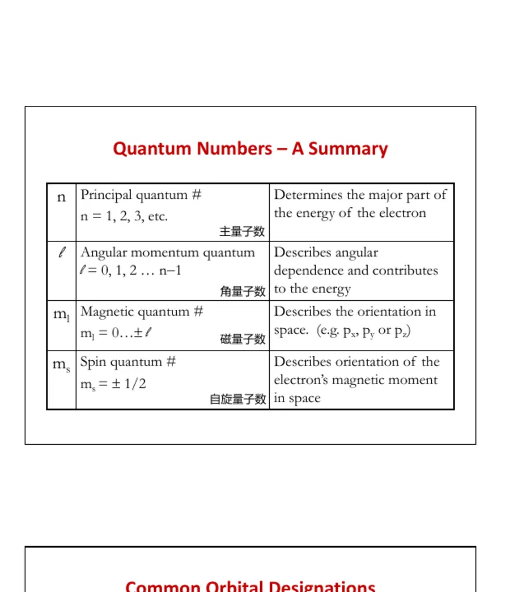
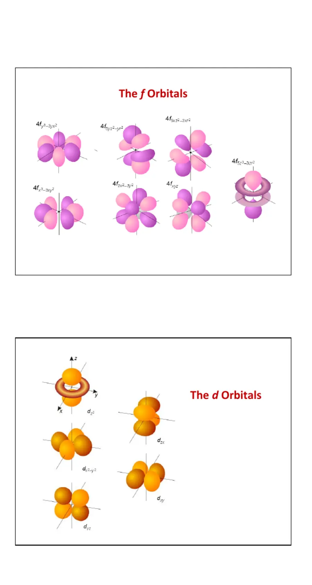
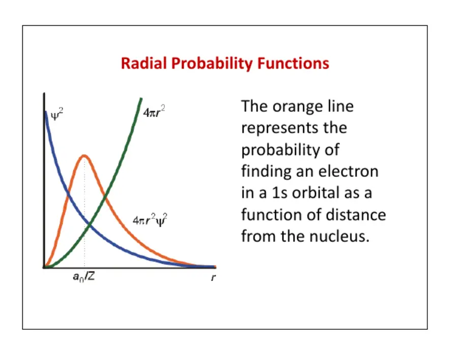

LESSON 02 · ATOMIC STRUCTURE
原子结构与周期趋势
周期性不是一组孤立箭头，而是核电荷、屏蔽、穿透能力、轨道能量与电子间排斥共同作用的结果。
1. 原子模型为什么必须进入量子力学
原子由带正电的原子核和电子组成。质子数决定元素身份，中子数改变同位素，电子数及其分布决定大部分化学性质。经典行星模型可以直观表示“核外有电子”，却无法解释原子的稳定性、离散线状光谱和电子为何只具有某些能量。若电子按经典电动力学绕核运动，它应持续辐射能量并落入原子核；真实原子显然不是这样。
光和电子都表现出波粒二象性。光电效应体现光的粒子性，电子衍射体现物质波性质。德布罗意关系把粒子动量与波长联系起来：
海森堡不确定性原理并非仪器不够精密，而是量子状态本身不允许位置和动量同时具有任意小的不确定度：
2. Schrödinger 方程与波函数
非相对论量子力学用波函数 ψ 描述体系状态。定态 Schrödinger 方程写作：
波函数本身可正、可负，也可能是复数。正负号代表相位，不代表电荷。Born 统计解释指出，|ψ|2 与单位体积内找到电子的概率密度成正比。归一化意味着在全部空间找到电子的总概率为 1。不同允许波函数还满足正交关系，这保证不同原子轨道可以作为相互独立的量子状态。
对于只含一个电子的氢样原子，势能只依赖电子与核的距离，可以在球坐标中把波函数分离为径向与角向部分：
氢样原子能量只由主量子数 n 决定，同一 n 的 s、p、d 轨道彼此简并。进入多电子原子后，电子—电子排斥打破这种简并，能量开始同时依赖 n 与 ℓ。
3. 四个量子数
给定 ℓ 时，mℓ 有 2ℓ+1 个允许值，所以 s、p、d、f 亚层分别含 1、3、5、7 个空间轨道。每个空间轨道依据 Pauli 不相容原理最多容纳两个自旋相反的电子，因此这些亚层最多容纳 2、6、10、14 个电子。

常见错误
“一个 p 轨道能装 6 个电子”是错的：一个 p 亚层含三只 p 轨道，总共可装 6 个电子；单只轨道仍最多两个。轨道是波函数，不是电子运动的实体路径。
4. 节点、轨道形状与相位
节点是波函数等于零的区域。氢样轨道的总节点数为 n−1，角节点数为 ℓ，径向节点数为 n−ℓ−1。角节点通常是经过原子核的平面或锥面，决定轨道瓣的方向；径向节点是以原子核为中心的球面。在节点两侧波函数相位改变，这对原子轨道组合成分子轨道时的相长与相消重叠至关重要。
例如 2p 轨道有一个角节点、没有径向节点；3s 有两个径向节点；3d 有两个角节点而无径向节点。常见轨道图用不同颜色表示相反相位，不能解释为“一瓣带正电，一瓣带负电”。dz² 的环形部分与轴向两瓣共同构成一个轨道；不能把环单独算成另一只轨道。

5. 径向函数、概率密度与径向概率
课件反复比较径向波函数与径向概率，是因为这三个量最容易混淆。R(r) 是波函数的径向部分，可以有正负并穿过零点；|R|2 与某一方向上单位体积的概率密度有关；若问电子距核为 r 的概率，还必须考虑半径为 r 的球壳面积随 r2 增加：

不同轨道在核附近出现的能力称为穿透能力。同一主量子数下通常为 s > p > d > f。穿透越强，电子越能进入内层电子云，受到的屏蔽越少，感受到的有效核电荷越大。因此在多电子原子中，同一 n 下通常有 E(ns) < E(np) < E(nd) < E(nf)。2s 虽然平均距离可能比 2p 更大，却因其内侧穿透峰而能量更低；平均半径与穿透能力不能简单画等号。
6. 多电子原子：屏蔽、穿透与轨道能量
氦原子已有两个电子—核吸引和一个电子—电子排斥项。更多电子加入后，每个电子都在其他电子产生的平均场中运动，精确解析解通常不可得，只能使用近似方法。内层电子在核与价电子之间产生屏蔽，使价电子感受到的吸引弱于裸核电荷；但屏蔽并不完整，且依赖轨道穿透能力。
有效核电荷写为：
同周期向右时，每增加一个质子通常也增加一个同层电子。同层电子的屏蔽效率小于核电荷的增量，所以 Zeff 总体增大。这个结果是原子半径减小、电离能增大和电负性增强的共同根源。向下一个族时，主量子数增加、价电子离核更远，新增内层电子带来较强屏蔽，通常使原子半径增大并使第一电离能降低。
轨道能量还会随占据情况改变。中性原子的 4s 往往在建立电子排布时先于 3d 被占据，但随着 3d 电子加入和原子电离，3d 与 4s 的相对能量会变化。不能把“先填 4s”错误推成“4s 永远低于 3d”。
7. 构造原理、Pauli 原理与 Hund 规则
构造原理
在独立电子近似下，电子优先占据较低能量轨道。常用 n+ℓ 规则估计中性原子的填充顺序；和相同时，n 较小者先填。这是经验规律，不是普适基本定律。
不相容原理
同一原子中任意两个电子不能具有完全相同的四个量子数。因此同一空间轨道最多有两个电子，且自旋相反。
Hund 规则
在简并轨道中，电子先以平行自旋单占，再开始成对。这样可减小同一区域内的库仑排斥，并获得量子力学的交换稳定化。
自旋多重度
总自旋量子数为 S 时，多重度为 2S+1。未成对电子数影响顺磁性，但严格的原子项还需结合轨道角动量。
Hund 规则不能简化成“电子讨厌配对”。平行自旋电子由于波函数反对称性，在空间上彼此回避，降低平均排斥；交换能不是经典小球交换位置产生的能量。比较排布时还要同时计入轨道能量差和成对能，不能孤立地最大化未成对电子数。
8. Cr、Cu 及过渡元素的排布例外
简单 n+ℓ 顺序会预测 Cr 为 [Ar]3d⁴4s²、Cu 为 [Ar]3d⁹4s²，而实验基态分别为 [Ar]3d⁵4s¹ 与 [Ar]3d¹⁰4s¹。传统“半满和全满亚层特别稳定”便于记忆，却没有说明稳定从何而来。更完整的图景是：3d 与 4s 能量非常接近，核电荷增加时 3d 能量下降较快，电子重新分配带来的轨道能量降低、库仑排斥与交换稳定化共同决定最低总能量。
课件采用 Rich 模型，把 3d 与 4s 看成随原子序数变化而交叉的两组能级，并显式考虑电子成对排斥能 Pc 和同自旋交换能 Pe。这能解释为何第二、第三过渡系出现更多不规则排布，例如 Nb、Mo、Ru、Rh、Pd、Pt、Au。具体电子构型应以实验数据为准，模型用于解释趋势而不是替代事实。
例如 Fe 为 [Ar]3d⁶4s²，而 Fe²⁺ 通常写作 [Ar]3d⁶，失去的是两个 4s 电子。原因是 3d 被占据后与 4s 的相对能量发生改变；“最后写出的电子”或“最高 n 的电子”常能给出正确结果，但真正依据仍是离子中轨道的相对能量。
9. Slater 规则：把屏蔽变成可计算近似
Slater 规则把电子构型按 (1s)(2s,2p)(3s,3p)(3d)(4s,4p)… 分组，再按待计算电子的位置累加屏蔽贡献。它不是精确量子计算，而是帮助理解相对趋势的半经验模型。
计数时必须排除正在计算的那个电子。例如 O 的 2p⁴ 中，某一个 2p 电子只有另外 5 个同组电子对它提供 0.35 屏蔽，而不是 6 个。外层电子通常不屏蔽内层电子；对 d、f 电子的分组处理也与 ns、np 不同。
例 1：O 的一个 2p 电子
O：(1s²)(2s²2p⁴)。
例 2：Ni 的 3d 与 4s 电子
4s 电子受到的有效核电荷更小，也更容易在生成阳离子时移走。
10. 课件练习的完整答案
Cu 的 4s 与 3d 电子
Cu：(1s²)(2s²2p⁶)(3s²3p⁶)(3d¹⁰)(4s¹)。
4s：S=10×1.00+18×0.85=25.30，Zeff=3.703d：S=18×1.00+9×0.35=21.15，Zeff=7.85
所以 4s 电子更容易失去。这与 Cu⁺ 首先形成 3d¹⁰ 构型一致。
P、S、Cl、Ar 的一个 3p 电子
它们的内层屏蔽均含 1s² 的 2.00 和 2s²2p⁶ 的 6.80；同组电子数依次为 4、5、6、7。所得 Zeff 约为 4.80、5.45、6.10、6.75。沿周期核吸引增强，与原子半径总体减小一致。
O²⁻、F⁻、Na⁺、Mg²⁺ 的一个 2p 电子
四者均有 10 个电子，指定 2p 电子的屏蔽常数均为 2×0.85+7×0.35=4.15。随核电荷从 8 增至 12，Zeff 为 3.85、4.85、6.85、7.85，因此等电子系列半径顺序为 O²⁻ > F⁻ > Na⁺ > Mg²⁺。
Ce、Pr、Nd 的 4f 电子与镧系收缩
随着原子序数增加，新增 4f 电子对其他 4f 电子只提供不完全屏蔽，而核电荷每次增加 1。因此 4f 及外层电子感受到的有效核电荷总体上升，轨道收缩，最终表现为镧系离子半径逐渐减小。不同 Slater 分组约定会影响具体数值，但不改变这一趋势判断。
11. 原子半径：不存在唯一的“边界”
电子云没有硬边界，所以原子半径必须通过实验结构定义。共价半径通常取同种原子单键键长的一半；金属半径来自金属晶体中相邻原子距离；范德华半径来自非键接接触距离。不同定义不能无条件混用。课件强调不同元素结构可能是金属、双原子分子或分子晶体，这正是跨周期比较半径时数据会出现跳动的原因。
总体上，同周期向右 Zeff 增大，原子半径减小；同族向下新电子层增加，原子半径增大。过渡元素横向变化较缓，因为增加的 d 电子也提供部分屏蔽。周期 5 和周期 6 的对应过渡元素半径异常接近，例如 Zr 与 Hf、Nb 与 Ta，主要来自镧系收缩。
镧系收缩不是“因为元素在周期表上被放到下面一行”。真正原因是 4f 电子穿透弱、对外层电子屏蔽不完全，核电荷持续增加导致电子云整体收缩。它影响镧系分离难度、后过渡元素半径、配位数和酸碱性，是结构化学与材料化学中的重要背景。
12. 离子半径与等电子系列
阳离子通常小于相应中性原子：移去价电子后，电子—电子排斥减弱，有时还失去最外层壳层，剩余电子感受到更强吸引。阴离子通常大于中性原子：加入电子增大同层排斥，而核电荷没有增加。对于等电子粒子，电子数与屏蔽近似相同，质子数越多，半径越小。
离子半径同样不是绝对常数。它随氧化态、配位数、自旋态和晶体结构改变。一般而言，较高正氧化态使金属离子更小；较高配位数对应更长的平均接触距离，表列半径往往更大。比较数据时必须确认采用同一配位数和同一套半径定义。
“阳离子一定比任何阴离子小”并不成立
正确比较是同一元素不同电荷，或电子数、周期和配位环境可比的系列。一个大型低电荷阳离子完全可能大于某个小型阴离子。
13. 电离能及其两个典型断点
第 n 电离能是从一摩尔气态粒子 A(n−1)+ 中移走一摩尔电子形成 An+ 所需的能量。连续电离总是吸热，且通常越来越困难，因为电子数减少后剩余电子感受到的有效核吸引增强。当电离跨越到内层闭壳层电子时，数值会突然大幅上升，可据此判断常见价电子数。
同族向下，价电子离核更远且屏蔽增强，第一电离能通常降低；同周期向右，有效核电荷增大，第一电离能总体升高。但存在两个常见不连续：
第 13 族首先移去的是 np 电子。它比同层 ns 电子能量高、穿透弱，因此尽管核电荷增加，电离能仍可能比前一元素降低，例如 Be→B、Mg→Al。
第 15 族具有较稳定的 np³ 平行单占排布；第 16 族开始有一只 p 轨道成对，占据同一轨道的排斥有助于移走其中一个电子，例如 N→O、P→S。
“半满稳定”仍只是压缩说法。真正比较应包括不同轨道能量、穿透、屏蔽、成对排斥和交换效应。周期趋势回答的是总体变化，局部例外恰好揭示不同能量因素的竞争。
14. 电子亲和能：先看反应方向再看符号
电子亲和能在不同教材中存在符号约定差异。一种传统定义把气态原子获得电子时释放的能量记为正；另一种热化学写法直接给电子获得过程的能量或焓变，此时放热过程为负。课件所用教材又以逆过程 A⁻(g)→A(g)+e⁻ 的能量变化定义正值。三种写法可能给出数值大小相同、符号或反应方向不同的量。
同周期向右，核对新增电子的吸引一般增强，电子获得过程总体更放热，但第 2 族和第 15 族附近有明显例外。第 2 族已有 ns² 闭合亚层，新增电子必须进入较高能 np；第 15 族已有 np³ 平行单占，新增电子需要在某一 p 轨道中成对并增加排斥。稀有气体的闭壳层也不利于接受额外电子。
向下同族的趋势并非简单单调。例如 Cl 的电子获得往往比 F 更放热，可理解为 F 的 2p 轨道很紧凑，新增电子承受较强排斥。由此可见，“越小吸电子越强”并非在所有量上都可机械使用。
15. 一张因果网络串起周期性
同周期向右通常导致原子半径减小、电离能升高，并增强对成键电子的吸引。
同族向下通常使半径增大、第一电离能降低，并增强原子或离子的可极化性。
解释同层轨道能量分裂、4s/3d 顺序变化以及 f 电子屏蔽差。
解释第 15→16 族电离能和电子获得趋势的异常。
使 Zr/Hf、Nb/Ta 等元素具有相似半径，也影响重元素化学。
电子数相同时，质子数越多，电子束缚越强，粒子半径越小。
做趋势题时先确定比较对象是否同周期、同族或等电子，再问主量子数、有效核电荷和亚层占据哪个因素发生改变。最后检查是否处在亚层切换、成对或闭壳层等可能产生例外的位置。这样得到的答案比背“左下大、右上小”更稳固。
16. 本课速记与常见误区
- 轨道是允许的单电子波函数，不是电子沿着运动的固定路径。
- ψ 的正负代表相位；|ψ|² 才与概率密度相关。
- 径向概率需要乘球壳因子 4πr²；“核处密度最大”不等于“核处径向概率最大”。
- 节点总数 n−1，角节点 ℓ，径向节点 n−ℓ−1。
- 多电子原子中，同一 n、不同 ℓ 的轨道不再简并；穿透与屏蔽必须考虑。
- n+ℓ 是估计填充顺序的经验规则，不是轨道能量永不改变的定律。
- Cr、Cu 的排布来自相近轨道能量与电子相互作用竞争，“半满/全满稳定”只是简写。
- 过渡金属形成阳离子时通常先失去 ns 电子，不能机械倒写填充顺序。
- Zeff 针对指定电子；Slater 规则是半经验近似，适合比较趋势而非高精度预测。
- 半径依赖定义与配位环境；离子半径不是脱离结构的唯一常数。
- 周期趋势有总体方向，也有亚层切换、电子成对和紧凑轨道造成的局部例外。
- 电子亲和能必须先写过程再谈符号，否则不同教材之间很容易出现“数值相同、正负相反”。
17. 周期趋势题的统一解题模板
第一步先确认比较对象：它们是同周期、同族、等电子粒子，还是同一元素的不同氧化态？第二步写出价层电子构型，找出比较过程中新增或移走的电子位于哪个亚层。第三步比较主量子数与有效核电荷：主量子数决定电子层尺度，有效核电荷决定电子被拉向原子核的强弱。第四步检查穿透、屏蔽、成对排斥、闭壳层或半充满亚层等局部因素。第五步明确所比较物理量的定义和实验状态，例如电离能针对气态粒子，离子半径依赖配位环境，电子亲和能必须注明反应方向。
遇到“解释例外”时，不要只写一句“半满稳定”。应明确指出哪两个轨道或构型在竞争：第 2 族到第 13 族是 ns 与 np 电子能量和穿透能力的差别；第 15 族到第 16 族是 np³ 单占与 np⁴ 成对后的排斥差别；Cr、Cu 是 3d 与 4s 轨道能量接近并叠加交换和成对效应；Cl 与 F 的电子获得差异则涉及紧凑 2p 轨道中更强的电子排斥。写出具体电子构型，解释通常就不会停留在口号。
最后做一致性检查：若推断某电子感受到更大的有效核电荷，通常应同时预期较小半径和较高电离能；若结论与此相反，就要寻找是否发生了电子层变化、亚层切换或数据定义不一致。Slater 规则给出的数值只用于支持趋势，不能把小数差异当成精密实验预测。真正可靠的答案应把近似模型的适用范围也写出来。